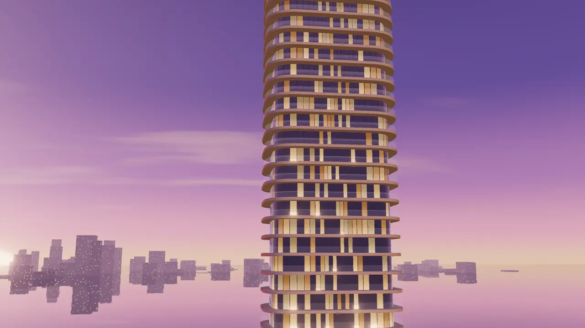

En la lección 09 la torre «volaba» con 120 fotos numeradas. Aquí vuela de verdad: la escena es la de assets/js/torre3d.js (cielo con shader, agua con reflejo, 30 plantas con ventanas en shader y bloom) y la cámara se mueve en tiempo real según cuánto has bajado. El resultado se parece, pero las reglas cambian: la cámara puede ir donde quieras, puedes encender una planta mientras pasas y el recorrido se edita cambiando seis números, no volviendo a renderizar.
El precio es la GPU del usuario. Por eso esta lección es mitad técnica y mitad criterio: cómo convertir el scroll en un plano de cine y cuándo merece la pena hacerlo en vivo.
El scroll no mueve la cámara: mueve un número entre 0 y 1.
Del scroll a la cámara
Todo empieza igual que con los fotogramas: una sección alta que da recorrido, un escenario sticky que se queda fijo y un progreso de 0 a 1. La diferencia está en qué haces con ese número. Con fotogramas lo conviertes en un índice; aquí, en una posición de cámara.
Separar las dos cosas es la decisión de diseño más importante de la lección. El código que lee el scroll no sabe nada de 3D, y el que mueve la cámara no sabe nada del scroll: solo recibe p. Así puedes cambiar el recorrido, el suavizado o pasar a GSAP sin tocar la otra mitad.
Un recorrido con scroll es un plano secuencia, y el usuario lleva el ritmo. Eso quiere decir que tú no controlas la velocidad, solo el espacio: cuántas pantallas dura cada movimiento. Regla de rodaje que funciona: un movimiento de cámara importante (acercarse, girar, subir) por cada 80–100vh de scroll. Si en 100vh la cámara cruza media ciudad, marea; si en 300vh avanza dos metros, aburre.
En el teléfono el scroll llega por inercia: un gesto del pulgar puede recorrer dos pantallas en medio segundo. No pelees con eso (nada de bloquear el scroll ni de «secuestrarlo»). Diseña el recorrido para que también se entienda pasando rápido: los momentos clave tienen que quedarse quietos un rato, y eso lo verás en el tramo 04.
Recorridos con curvas
Un lerp entre dos puntos sirve para un pasillo. Para rodear una torre, subir y acercarte a una ventana necesitas una curva que pase por varios puntos. THREE.CatmullRomCurve3 es la herramienta: le das una lista de puntos y te devuelve una curva suave que pasa exactamente por todos. Con curve.getPoint(u) sacas la posición para cualquier u entre 0 y 1.
El truco profesional es usar dos curvas: una para la posición de la cámara y otra para el punto al que mira. Si la cámara siempre mira al centro de la torre, el plano es de vigilancia; si el objetivo se adelanta o se retrasa respecto a la cámara, aparece la intención: la cámara «busca» la planta 18 antes de llegar.
setScissor), así que la demo usa un único contexto WebGL.Usa 'centripetal' como tipo de curva. La variante por defecto ('catmullrom' con tensión 0,5) hace bucles y pasadas raras cuando dos puntos están muy cerca o muy lejos entre sí; la centrípeta nunca se enrosca. Y usa getPoint (no getPointAt) en las dos curvas: así el punto 3 de la cámara coincide con el punto 3 de la mirada, aunque los tramos midan distinto.
Los recorridos caros se parecen a la cámara de un dron bien pilotado: siempre hay algo en primer término que pasa más rápido que el fondo (una esquina de la torre, una barandilla), la cámara nunca va en línea recta hacia el objeto y casi nunca mira en la misma dirección en la que avanza. Un recorrido barato es un zoom: la cámara va recta al centro de la torre. En la portada, la cámara se desliza en diagonal por la fachada mientras mira la planta 18.
En vertical caben menos cosas a los lados. La misma curva funciona, pero aleja un poco la cámara del eje de la torre (en la portada, un 12 % más) y abre el campo de visión: torre3d.js ya pasa de 35° a 55° cuando la pantalla es más alta que ancha. Evita los puntos que pasan muy cerca de un objeto: en una pantalla estrecha, ese objeto ocupa todo el plano y se pierde la referencia.
Easing y suavizado
La rueda del ratón mueve el scroll a golpes de unos 100 píxeles. Si la cámara sigue el scroll al instante, también va a golpes. Hay dos herramientas distintas, y conviene no mezclarlas:
- Suavizado (lo que hace el
scrubde GSAP o unlerppropio): la cámara no salta al progreso nuevo, se acerca a él poco a poco. Arregla los golpes de la rueda. - Easing del recorrido: la relación entre el progreso y el punto de la curva no es lineal. Sirve para que la cámara acelere, frene y se pare donde tú quieras.
dt para que en una pantalla de 120 Hz vaya igual de rápido que en una de 60.El suavizado tiene un coste: retraso. Con un factor de 0,12 por fotograma, la cámara tarda casi medio segundo en alcanzar al scroll. En un recorrido largo se nota como peso, como si la cámara tuviera masa, y eso queda caro. En una interfaz (un menú, un botón) sería un desastre.
El easing del recorrido se hace con una tabla de «paradas»: pares de progreso y posición en la curva, y entre cada par una smoothstep. Como smoothstep empieza y termina con velocidad cero, la cámara frena al llegar a cada parada y arranca suave al salir. Es lo que pasa en la portada al llegar a la planta 18.
El scroll táctil ya llega suavizado por la inercia del sistema. Encima de eso, un lerp fuerte se siente como si la página fuese con retraso respecto al dedo. En táctil baja el suavizado (en la portada, 0,2 en vez de 0,12) o quítalo: deja solo el easing del recorrido.
Suavizas la cámara con p += (target - p) * 0.1 en cada fotograma. Un usuario con un monitor de 144 Hz, ¿cómo lo verá comparado con uno de 60 Hz?
- Igual, porque el factor es el mismo.
- Más rápido: hay más fotogramas por segundo, así que se acerca al objetivo más veces por segundo.
- Más lento, porque cada fotograma dura menos.
Un lerp por fotograma depende de los fotogramas por segundo. A 144 Hz se aplica 2,4 veces más a menudo y la cámara alcanza al scroll mucho antes. Por eso el laboratorio calcula el factor con el tiempo real: 1 - Math.pow(1 - 0.12, dt * 60).
Paradas y texto sincronizado
La portada está escrita como un plan de rodaje. Antes de tocar código, apunta los tramos: dónde está la cámara, a qué mira y qué dice el texto en cada parada. Con esa tabla delante, el código es casi una transcripción.
0 – 0,16Sobre el agua, lejos, casi quietaLa torre entera, ligeramente a la derechaTítulo y entradilla0,26 – 0,5Pegada a la fachada, se desliza en diagonalLa planta 18, que se enciende«Del agua a la planta 18»0,58 – 0,8Rodea la esquina y subeLas plantas altas«Cada tramo, una parada»0,88 – 1Por encima de la azoteaLa piscina iluminada«Fin del plano»En el código, el texto no se anima con su propio temporizador: lee el mismo progreso suavizado que la cámara, a través de una variable CSS. La portada escribe --p en el header en cada fotograma y cada frase calcula su opacidad con clamp(). Si la cámara va con retraso por el suavizado, el texto va con el mismo retraso, y nunca se desincronizan.
smoothstep(0.3, 0.7, …): cuanto más separes esos dos números, más corto es el vuelo y más larga la parada.Una frase por parada, corta, y en una zona del encuadre donde la cámara deje cielo o sombra. Si el texto aparece mientras la cámara se mueve, el ojo tiene que elegir entre leer y mirar, y pierde las dos cosas. Por eso en la portada el velo oscuro de la izquierda es fijo: el 3D se mueve detrás, pero el hueco del texto siempre está ahí.
En vertical el texto va arriba y la torre debajo, con un velo de arriba abajo en lugar de lateral. Tres paradas son el máximo razonable en un teléfono: cada una pide su tramo de scroll y, a partir de 250vh, el pulgar se cansa. Si tienes cinco mensajes, junta dos o pásalos a la sección siguiente, en HTML normal.
GSAP ScrollTrigger y Three
Para un recorrido con tres paradas, el código propio basta. Cuando la coreografía crece (la cámara gira mientras un objeto se despieza, aparecen etiquetas, cambia la luz), ScrollTrigger te ahorra trabajo: una timeline con scrub te da el suavizado gratis y te deja colocar cada cosa en su momento con números legibles.
La regla para mezclarlo con Three: GSAP anima objetos JavaScript normales (un «rig» con el ángulo de la cámara, la separación de las piezas, la intensidad de una luz) y en onUpdate trasladas esos valores a la escena y pintas. Podrías animar directamente camera.position, pero entonces cada propiedad va por su lado y el render no sabe cuándo pintar.
render() solo cuando el progreso cambia, incluido el suavizado del scrub.Si usas pin: true de ScrollTrigger con un canvas de Three dentro, el canvas cambia de contenedor al fijarse y puede medir mal su tamaño un instante. Un escenario position: sticky dentro de una sección alta (como en todas las demos de esta lección) evita el problema y no necesita JavaScript para fijarse. Usa pin cuando necesites que el contenido de después espere.
Con gsap.matchMedia() creas una timeline distinta para táctil: menos recorrido (end: '+=200%' en vez de 400 %), un scrub más corto (0,3) y menos movimiento de cámara. En la lámpara, en vertical la cámara se aleja y las etiquetas bajan bajo el objeto en vez de ir a su lado: prueba «Ver en móvil».
En una timeline con scrub animas camera.position.x y camera.position.z por separado y pintas en un bucle continuo. ¿Cuál es el problema principal?
- Que GSAP no puede animar propiedades de objetos de Three.
- Que
scrubno funciona con números, solo con elementos HTML. - Que la cámara se mueve en línea recta entre valores y el bucle pinta aunque no cambie nada. Mejor un rig (ángulo, distancia, altura) y pintar en
onUpdate.
GSAP anima cualquier número de cualquier objeto, también los de Three. Pero animar x y z por separado da trayectorias rectas, no arcos, y el bucle continuo gasta GPU en reposo. Con un rig, un ángulo produce un arco perfecto alrededor del objeto y onUpdate pinta solo cuando hace falta.
Tiempo real o fotogramas
La portada de esta lección y la de la lección 09 cuentan casi lo mismo. Una con 120 imágenes, la otra con una escena viva. Ninguna es mejor en general: cada una gana en cosas distintas, y elegir bien es parte del criterio que se le explica a un cliente.
Fotogramas

3,3 MB 120 WebP de 1280 × 720- Calidad
- La que quieras: render offline, IA, vídeo real. Sin límite de GPU.
- Equipos
- Igual en todos: dibujar una imagen es casi gratis.
- Interacción
- Solo adelante y atrás. Para cambiar el recorrido, renderizar otra vez.
- Móvil
- Secuencia vertical propia (otros 3,7 MB) y cuidado con la memoria.
Tiempo real
−70 5 230−58 12 140−38 54 62 10 57 52 52 82 40 30 118 46
mira a−18 40 0 −8 34 0 0 57 0 0 57 0 0 80 0 0 96 0
- Calidad
- La que permita la GPU más modesta de tu público. Nada de sombras de render.
- Equipos
- Muy desigual: fluido en un portátil, justo en un Android de gama media.
- Interacción
- Total: encender plantas, cambiar el recorrido, tocar, elegir.
- Móvil
- Modo ligero y respaldo a fotogramas en equipos modestos.
Pregunta qué tiene que hacer el usuario además de mirar. Si solo recorre (llegar a la torre, ver la azotea), los fotogramas dan más calidad con menos riesgo, y el peso se reparte con la carga por pasadas. Si tiene que elegir (una planta, una estancia, un acabado), el tiempo real se gana su coste, porque los fotogramas no pueden enseñar una combinación que no renderizaste. Muchas webs premium mezclan las dos: fotogramas en la llegada y 3D vivo en la parte interactiva. Es justo lo que harás en el proyecto final.
Aquí el móvil inclina la balanza. Los fotogramas pesan más en datos pero cuestan poca batería; el tiempo real pesa poco en datos pero calienta el teléfono. Para una llegada de 30 segundos, cualquiera de los dos vale. Para una sección que el usuario explora un par de minutos, el 3D en tiempo real necesita sí o sí su modo ligero.
El móvil
La portada hace tres cosas distintas según el equipo, y las tres se deciden antes de crear la escena:
- Modo ligero con cualquiera de tres señales: puntero táctil, menos de 760 px de ancho o 4 núcleos o menos. En ligero,
torre3d.jscambia el agua con reflejo por un plano liso (el reflejo obliga a pintar la escena dos veces), baja el bloom y limita el DPR a 1,25. - Menos recorrido: 240vh en vez de 300vh, el texto arriba, el plano cenital oculto y un poco más de distancia a la torre.
- Respaldo: sin WebGL, con ahorro de datos o con movimiento reducido, se queda el póster (el primer fotograma de la secuencia de la lección 09). En equipos muy modestos, en vez del 3D se puede montar la secuencia de fotogramas completa con el mismo progreso.
navigator.hardwareConcurrency y navigator.connection no están en todos los navegadores (Safari no expone connection). Por eso el código usa ?. y un valor por defecto: si el navegador no dice nada, se asume un equipo normal y se decide por el ancho y el tipo de puntero.
Prueba siempre en un teléfono real de gama media, no solo en el modo dispositivo del navegador: el modo dispositivo simula el tamaño, no la GPU. Mira tres cosas: que el primer fotograma llegue rápido (el póster ayuda), que el scroll no vaya a tirones al pasar la planta 18 y que, tras un minuto subiendo y bajando, el teléfono no esté caliente.
Un cliente quiere que en su web de un hotel rural en el Maestrazgo la cámara recorra el valle hasta la masía con el scroll, sin más interacción. Su público reserva sobre todo desde el móvil. ¿Qué propones?
- Una secuencia de fotogramas (o vídeo) con versión vertical propia: el recorrido es fijo, la calidad es mayor y funciona igual en cualquier teléfono.
- Three.js en tiempo real, porque es más moderno.
- Three.js con un valle modelado a mano y sombras en tiempo real en el móvil.
Sin interacción, el tiempo real no aporta nada que los fotogramas no den mejor, y el público es móvil. Un paisaje entero en 3D en vivo sería caro de producir y de pintar. Los fotogramas, con carga por pasadas, son la opción profesional aquí.
Resumen
- El scroll produce un número de 0 a 1; otra función, que no sabe nada del scroll, lo convierte en cámara. Separadas, cada mitad se cambia sin romper la otra.
- Dos
CatmullRomCurve3centrípetas, una para la posición y otra para la mirada, dan recorridos con intención; una tabla de paradas consmoothstephace que la cámara frene donde habla el texto. - Suaviza con un lerp corregido por el tiempo (o el
scrubde GSAP), sincroniza el texto con el mismo progreso y, si usas GSAP, anima un rig y pinta enonUpdate. - Tiempo real cuando hay que elegir o tocar; fotogramas cuando solo se recorre. En el móvil, modo ligero, menos recorrido y respaldo.
Reto
Escribe el plan de rodaje de una llegada para una web de la agencia (una bodega de la Plana, una fábrica o un estudio de arquitectura) con cuatro tramos: dónde está la cámara, a qué mira y qué dice el texto. Móntalo con createTower y tu propio path (o con la torre simplificada del editor si el edificio es otro), con dos curvas centrípetas, paradas con smoothstep, texto sincronizado por --p y una versión vertical con menos recorrido. Al final, decide por escrito si para ese cliente lo harías en tiempo real o en fotogramas, y por qué.